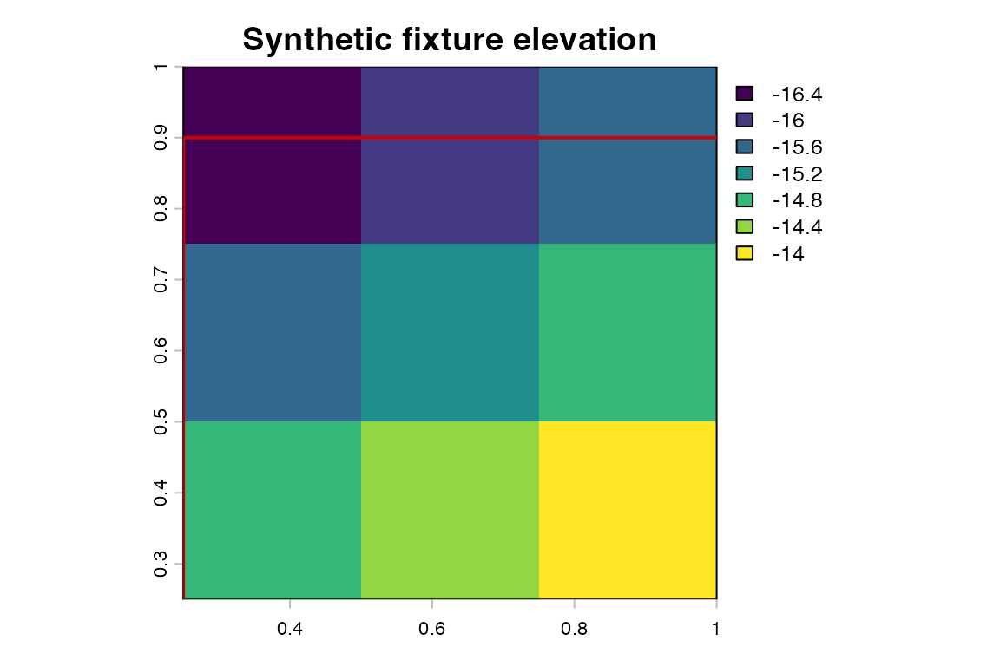

Extract Elevation with terra
Source:vignettes/example-extract-elevation.Rmd
example-extract-elevation.Rmd
library(terra)
#> terra 1.9.27
example <- bt_example_setup()
#> Synthetic miniature BlueTopo fixture for package demonstration.
#> Fixture-only option: bluertopo.allow_test_hosts = TRUE enables local file URLs.
example_aoi <- example$aoiEvery rendered output on this page uses: Synthetic miniature BlueTopo fixture for package demonstration.
bluertopo() returns terra objects and, with
details = TRUE, exposes selected tiles, downloads, query
metadata, provenance, and coverage diagnostics. Normal native extraction
does not intentionally resample.
Extract Elevation
result <- bluertopo(
example_aoi,
layers = "elevation",
resolution = "native",
coverage = "fill",
details = TRUE,
progress = FALSE
)Object Summary
rasters <- bt_rasters(result$data)
object_summary <- data.frame(
element = c(
"result$data class",
"number of layers",
"layer names",
"CRS summary",
"resolution",
"source count"
),
class = c(
paste(class(result$data), collapse = ", "),
"integer",
"character",
"character",
"character",
"integer"
),
value = c(
paste(class(result$data), collapse = ", "),
sum(vapply(rasters, terra::nlyr, numeric(1L))),
paste(unique(unlist(lapply(rasters, names), use.names = FALSE)), collapse = ", "),
paste(unique(vapply(rasters, function(r) as.character(terra::crs(r, describe = TRUE)$code), "")), collapse = ", "),
paste(unique(vapply(rasters, function(r) paste(round(terra::res(r), 3), collapse = " x "), "")), collapse = "; "),
length(unique(unlist(lapply(rasters, terra::sources), use.names = FALSE)))
),
stringsAsFactors = FALSE
)
bt_display_table(object_summary)| element | class | value |
|---|---|---|
| result$data class | SpatRasterCollection | SpatRasterCollection |
| number of layers | integer | 3 |
| layer names | character | elevation |
| CRS summary | character | 4326, 3857 |
| resolution | character | 0.25 x 0.25; 0.5 x 0.5; 33395.847 x 33397.462 |
| source count | integer | 2 |
File-Backed Sources
bt_display_table(bt_sources_table(result$data))| source | |
|---|---|
| NA | |
| /private/var/folders/7j/dr505g_j3zd9z6m9qdykzc4w0000gn/T/RtmpL2TdCv/bluertopo-example-cache/tiles/TILE_COARSE_B/BlueTopo_TILE_COARSE_B.tiff | bluertopo-example-cache/tiles/TILE_COARSE_B/BlueTopo_TILE_COARSE_B.tiff |
Coverage
bt_display_table(bt_coverage_table(result$coverage))| published_coverage_fraction | selected_coverage_fraction | selected_aoi_fraction | target_coverage | target_met | coverage_type |
|---|---|---|---|---|---|
| 1 | 1 | 1 | 1 | TRUE | geometric tile-index coverage |
Elevation Preview
preview_raster <- bt_plot_first_raster(result$data, main = "Synthetic fixture elevation")
aoi_projected <- terra::project(example_aoi, terra::crs(preview_raster))
terra::plot(aoi_projected, add = TRUE, border = "#d00000", lwd = 2)
Synthetic miniature BlueTopo fixture for package demonstration: elevation raster from the first native grid.
When native source grids differ, the result can be a
SpatRasterCollection. Each member can still be file-backed
by verified original assets.